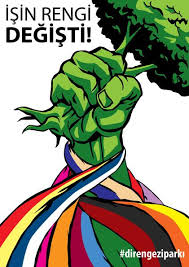

Panik yapma, organize ol
Gezideki 50 kişiye milyonlarcası eklenmiş, İstanbul gaz altında, çelik kuvvet bastıracakmış, yok lan çevik kuvvetmiş o, başbakan açıklama yapmış, hülya avşar mı oradaki, necati şaşmaz kimdi lan çılgın bediş miydi, everyday chapulling, avrupa parlamentosundan açıklama gelmiş, hareketin temsilcileri kimmiş ya, bu hareketin arkasında dünyayı ele geçirmeye çalışan amerikalı uzaylılar var, yok yok Fethullah’ın işi, bence kesin Kürtler, camide sevişen ben diildim valla kimdi ki o, polisler F16’larla Gezi’ye dalacakmış, Kurt Cobain dirilmiş Gezi’ye destek vermek için, portakal gazı sıkıyolaaaar, yok lan portakal gazı sıksalar ölürüz portakallı gazoz o senin dediğin, ama hiç Türk bayrağı da asılmamış AKM’ye çok ayıp, ya birilerinin askerleriyiz diye bağırıyolar olum ne askeri, annemler geliyomuş bu akşam Gezi’ye sil şu duvardaki küfürleri hemen, Ankara’da şiddet artıyormuş, başbakan bissüru ağacı ne ara dikmiş lan, flamasız bayraksız Gezi, flamasız bayraksız Gezi mi olur, Mutlu Vali’yle Şaşmaz Necati LSD tribindelermis kesin haber, ne molotofu len mojito o -olsa da içsek, başbakan sabrımı kaybediyorum demiş Nato destekli ordu gönderiyormuş Gezi’yi kışla yapmak için, faiz lobisi olmasın o, faiz lobisi derken!?, Gezi’deki insanlar günde bir kaç defa işiyorlarmış kesin haber, oha sıçıyorlarmış da inanamıyorum, referandum olacakmış, referandum olamazmış, jandarma da saldırıyormuş, asker mi girecekmiş, asker giremezmiş, aa muhteşem yüzyılda oynayan adam diil mi o başbakanla konuştuk diyen, AIHM’ye mi gitsek, avukatlar tutuklanmış, doktorlar tutuklanmış, 30 kişi gözaltına alındı diyo hala Mutlu Vali ya, Tayyip analara çocuğunu da al git demiş, e ama yuh artık!
Sevgili Çapulcu Prenses,
Biliyorum gündem allak bullak, senin gaz yiyen ciğerlerin, cop yiyen uzuvların, plastik mermi yiyen gözlerin de öyle. İşe yaramayan, yanlı medyanın yanında sosyal medyanın bin kaplan gücünde olduğu kesin amma ve lakin bir yandan polisten kaçarak pasif direnişi sürdürmeye, yaralılarla ilgilenmeye çalışırken öbür yandan da sosyal medyadaki haber, görüntü, geyik, güncelleme, uyarı trafiğini takip etmekten pasif ve iş çıkaramaz hale düşebiliyoruz. Bir taraftan gelen haberlerle korkuyoruz, bir gülüyoruz, bir ağlıyoruz, bir tırsıyoruz, bir cesaretleniyoruz. Ve genelde panik yapıyoruz… Haftalardır yaşatılan üzüntülerden, tayyibin tehditleri, yaralıların, tutukluların ve üç haftadır direnenlerin yorgunluklarının artmasından sonra insanlar hareketlerini başka bir gerçekliğe evirmekteler şu anda. Bana göre tam da şimdi organizasyonun etkili bir şekilde kurulması zamanıdır zira organize olmayıp B,C,D,E,F planları yapmadığımızda panik olup, stratejik olarak anlamlı olmayan veya herkesi mutlu etmeyen kararlar alabiliyoruz ve bunların sonucu üzüntü, bıkkınlık; moral bozukluğu ve hatta daha fena olaylar şeklinde karşımıza çıkabiliyor. İnsanız, yalnız ve yorgun hissettiğimizde saçmalayabiliyoruz (comes in the package)…
Gündelik hayatta neden panik yaparsın, Prenses? Şahsen ben hazırlıksızsam, organize değilsem, son dakikaya bıraktıysam bir şeyleri panik yapıyorum. O yüzden organize olmanın binbir güzelliğini unutmayıp, kolay olmasa bile bir yolunu bulup organize olmak gerek. Geçen gün bir arkadaşım Facebook’a bir yorum olarak şöyle bir şey yazmış: “Yapay gündemleri takip etmektense barışçıl, anlayışlı, yaratıcı ve üretici bir şekilde direnişin kendi gündemini yaratmalı.” Kesinlikle katılıyorum! Farklı sivil toplum gruplarındaki gönüllülük zamanlarımdan ağzımda kalan tad, en çok her gün ofise uğrayıp ofisin gündemini takip ederek buna katkıda bulunmak ve bunu değiştirme imkanına sahip olmaktı sanırım. Bu muhteşem bir duygudur Prenses! Bu yüzden seninle hem direnişin gündemini yaratmaya hem de organize olarak birlik olmaya yardımı dokunabilecek deneyimle sabit bir kaç fikir paylaşmak istiyorum. Hazır Gezi merkezi dağıtılmış, direniş mahalle konseyleri hizasında merkezi ademiyete doğru ilerlerken bakarsın bir kaç organizasyon tüyosu işine yarar…
2) E-mail ve bilgi akışı güvenliği için mümkün olduğunca çok insanın (özellikle merkez üstekilerin ve merkez üsle iletişimi üstlenenlerin) Rise Up mail hesabı açması: https://www.riseup.
3) Değirmenin suyu: Ne Gezi’de ne de sokaklarda bulunan Başbakan ve hısımlarından sıkça duyduğumuz yok bu hareketin arkasında bilmemkimler varmış da, Amerikalılar para yardımı yapıyormuş da, bu değirmenin suyu nerden geliyormuş da… Saçmalıklarına orta parmağı gösterebilmek ve parklarda (ya da merkez üste) parasız yemek, içecek dağıtan arkadaşları zor durumda bırakmamak ve daha iyisini yapabilmelerini sağlayabilmek için bağış sistemi kurulabilir. Yani parası olan ne kadar vermek istiyorsa atsın bağış kutusuna. Kimisi o parayı veremez belki, ama veren olursa da yemek çıkartmak için daha çok ve güzel malzemenin alınmasına destek olur. Oradan yemek yiyen de kendisini mahçup hissetmez. Hem para artarsa belki yeni çadırlar, kaliteli gaz maskeleri, baretler alınır, pankart boyayanlara boya parası, kumaş parası çıkar. Daha da artarsa bu malzemeler diğer şehirdeki direnişçilere gönderilir.
4) Meclis/konsey sistemi: Tek kişi karar almak kolaydır ama iki kişi olduğunda bile bir karar almak zorlaşır. Binlerce kişinin bir karar almaya çalışması işe epey zorlu, boğucu ve hatta bölücü bir hale gelebilir. Aynı zamanda oylama sistemi de hiç bir yerde, hiç bir zaman işlemediği için dünyada çok ve uluslararası katılımlı protesto kampları/gösterilerinde kullanılan konsey sistemine geçmek yararlı ve verimli olabiliyor. Hem de her bir bireye aktif katılım şansı tanınarak insanların istek ve yeteneklerine göre görevler seçmesi sağlanmış oluyor. Bunu gerçekleştirebilmek için öncelikli yakınlık grupları kurulmalı. Yani ortak amaç, ideal ve değerlerle bir araya gelmiş çok da küçük olmayan yakınlık grupları (klanlar gibi düşün). Mesela kemalistler, eşcinseller, inançlı müslümanlar, kürtler, veganlar, anarşistler, milliyetçiler, greenpeace’ciler, anneler, çarsı, komşu teyzeler, çikolata yemekten çok hoşlananlar, ilkokul arkadaşları, vs.
Hangi yakınlık grubunda olacağın tamamen senin kendini nasıl tanımlamak istediğine bağlı -tabi ki ‘yakın’ olduğun birileri ve bir duruş ile olmak kaydıyla. Bu yakınlık gruplarının kendi içlerinde görev dağılımı yaparak konseydeki diğer yakınlık gruplarından kendileriyle aynı görevi yapacak kişilerle bilgi alışverişi yapmasının sağlanması bizi topluluk içinde karar almaya götüren esas adımdır. Yakınlık grupları birleşip mahalle konseyleri içinde her grubu tatmin edecek kararlar alınmasını sağlar, mahalle konseyleri de birleşip Voltran’ı oluşturur! Yakınlık grupları ve konseyler içinde dağıtılacak başlıca roller şunlar (ihtiyaca göre yeni görev tanımları da eklenebilir tabi ki):
- İlkyardımcılar: Bu kişiler tıp öğrencileri, hemşireler, doktorlar ya da ilkyardım bilen birileri olursa şahane. Olmazsa da sorun değil. Esas amaç yaralıların ilk müdahalesinin yapılıp sağlam bir şekilde revirlere ulaştırılması. İlkyardım çantasının sorumluluğu ve ihtiyaçlarından bu kişiler sorumludur.Knock Off watches Tag Heuer Replica
- Yasal destek kişileri: Yine bu kişilerin hak hukuktan anlayan birileri olması ideal ama olmasa da olur zira bu kişiler barodaki avukatlarla bağlantıdan sorumlu, elinden geldiğince yasal dosya için işe yarayabilecek her şeyi (yaralılardaki hasarlar, nasıl yaralandıkları, suç duyurusu için bilgi toplama, gözaltındakilerin gördüğü muamele vs.) belgeleyen kişilerdir. Avukatların isimleri ve iletişim detayları ile hasar tutanaklarından bu kişiler sorumludur.
- Basın ve iletişim sorumluları: Mümkün olduğunca doğru haberi yerel, sosyal ve uluslararası medyadan toplayıp homebase’e ileten, alanlardaki basın mensuplarıyla konuşan, güncelleme veren kişiler.
- Eylemciler: Sokaklarda olup fiziksel direniş yapmaktan başka stratejik hiç bir görev almayacak/almak istemeyen, gözaltı riskini alan gözü kara kişiler. Bu kişiler, vücutlarının bir köşesine merkez üsteki yasal işlerden sorumlu kişinin iletişim bilgilerini yazmalı ki içeri alındığı anda haber verebilsin, avukatlar haberdar olsun. Bu kişilerin sayısı gözaltı veya sağlık nedenleriyle azaldığında yenileri yakınlık grubuna çağrılmalı. Eylemciler hep iki kişi halinde (buddy sistemi) hareket etmeye çalışmalı. Bir tanesi şiddetli müdahale alırken diğeri ortamı yumuşatmayı ya da merkez üsse mesaj atmayı başarabilir. İki kişi olarak daha güçlüyüz!
- Koruyucu melekler: Eylemciler kadar önlerde olmayan ama sokaklarda olan, psikolojik veya fiziksel desteğe ihtiyaç duyanların imdadına yetişecek, şu, yiyecek vesaire gerektiğinde eylemcilere temin edecek kimseler. Bu kişilerin sabırlı, anlayışlı, telkin edici ve ortamı yumuşatıcı diyalog özelliklerini taşıması önemli. Ortalıkta “bize portakal gazı atıyorlaaaarr” diye bağırarak ağlayan bir koruyucu melek olması pek bir işe yaramayacaktır.


{kind=link}
{kind=link}
Arkadaşlar bu yazı pek doğru bir yazı olmamış… Böyle amatör bir örgütlenmeye gitmeyin sakın çünkü polisin o yeri bulmamasının imkanı yok. Kolayca tespit edilir. Kulaktan kulağa ile yürümez bu işler. Sivil polisler ve aramızda bulunan istihbaratçılar olduğunun bilincinde olmanız lazım. Böyle bir organizasyona girdiğinizde tespit edildikten sonra bir de yasa dışı örgüt kurmaktan ve yasa dışı örgüt faliyetlerinde bulunmaktan tutuklanır ve mahkum edilirsiniz. İnternette böyle bir yazı yayınlamanız da insanları bu hareket içine girmek için cesaretlendirir ve başlarına iş açmış olursunuz. İşin bu yönünü bilmiyorsunuz, yapmayın böyle bişey. Parti kuralım derseniz eyvallah, ona tamam. Ama böyle gizli örgütlenmek falan… yapmayın.. Bu yazıyı da bence kaldırın internetten, insanlar iyi niyetle bu tavsiyelere uyup başlarına hukuki problem açmasınlar. Zaten başbakan’ın istediği de bu… açığı yakalayıp o açığı kullanarak insanları elimine etmek… Koz vermeyin polisin eline. Yasa dışı örgüt kurmaya teşfik etmeyin gençleri. Benim yaşım 48 bu arada, inanın bu yukarıda yazdığınız işleri daha kötüleştirmekten başka bir işe yaramaz. Kuracaksanız parti kurun, hepimiz de oy verelim.
Merhaba Murat Bey,
Polis, bulusma yeri olsa da olmasa da, orgutlenseler de orgutlenmeseler de insanlari gozaltina alip, tweet atan arkadaslarimizi yargi karsisina cikartabiliyor. Yasa disi bir orgut kurmakla herhangi bir ilgisi yok yukaridaki organizasyon semasinin. Su anda parklarda yapilanin aynisi kucuk gruplara bolunsun ki demokrasi olusturma surecine herkes katilsin, kuru kalabalik olmasin, dusunen ve is cikaran bir kalabalik olsun diyor esasinda bu yazi. Gizli orgutlenip darbe yapin filan demiyor. Zaten oyle bir sey demek isteseydim yaziyi internette ve kendi ismimle yayinlamazdim, merak etmeyin.
Ancak bu yazinin soylemek istedigi bir baska sey de (icinde acikca yazmasa da) siyasi degisim yani bu partinin gidip baska bir partinin kurulup insanlarin oy vermesinin yetmedigi, sosyal bir degisimin olmasinin, toplumun evrilmesinin gerekliligi. Binlerce insan bir araya gelip sokaga ciktiginda bu bir ayaklanmadir ve sosyal bir degisime donusmesi sart degildir. Yukarida yazilan, kucuk/yakinlik gruplarina ayrilip buyuk grubu beslemek, simdiye kadar tercihleri yuzunden ezilmis bireylerin bundan sonra nasil bir degisiklik olmasini istediklerini dile getirmesini saglayacaktir. Bu da toplumsal bir algi degisimine, empati kanallarinin gelismesine yol acar.
Parti kurun, oy verelim demissiniz… Oysa ki ben hala sokaklarda ve sosyal medyada degisim isteyen arkadaslardan gayet maço, homofobik, diger %50yi asagilayan tarzda espriler, soylemler duyuyorum. Bu boyle kalip degismedigi muddetce, biz istersek her uc yilda bir yeni hukumet kuralim, neye yarar? Kaldi ki hadi parti kurduk, siz de oy verdiniz…Su meshur diger %50 buharlasip ucacak mi oyle olunca? Bu insanlarin da taleplerini bilmek, ne bicimde yasamayi arzu ettikleriyle hic ilgilenmeyip tipki karsi oldugumuz hukumetin sosyal tavrini mi izleyelim?
Murat Bey, sizin kaygilarinizi ozellikle yasinizdan dolayi anlayabiliyorum. Zaten hukumet de su anda, son yirmi bes yilda apolitik olmamizi saglamis bu toplumsal travmalarimizla oynuyor, korkutuyor. 70’li, 80’li yillarda dunyanin pek cok yerinde organize sosyal ve politik hareketler sayesinde sosyal degisim gerceklesirken, bizim ulkemizde askeri cunta vardi, yoken de askeri darbe korkulariyla yasadi insanlar ve mecburen kapitalizmin dayattigi duzen icinde kendi arzularini bastirmak durumunda kaldilar. Tam da bu sebeplerden bu sosyal degisim bize cok gec dokundu, hatta o kadar gec dokundu ki insanlar halihazirda hazmedebilmis degil. Basimiza ne dert acildiysa simdiye dek, merkeziyetci politikalardan geldi. Bu sefer yerele inelim diyorum hep birlikte. Bakalim kirsaldaki ciftci nasil bir sosyal, politik ve ekonomik degisim arzu ediyor… Kucuk gruplara ayrilalim, fikrilerimizi, ihtiyaclarimizi, taleplerimizi toparlayip buyuk grupta birlestirelim. Butun bu surecten sonra ancak politik, ekonomik ve sosyal bir degisime goturebilecek partiler kurulabilir. Oy veren de bilincli olarak verir… Tarihimizde ilk defa, belki, eger inanirsak, gercek demokrasiyi deneyimleme sansimiz olabilir boylece. Zira katilimci demokrasi denilen sey “katilim” gerektirir. Eger ben mevcut hukumete kizip gidip parti kurarsam ve siz de oy vermekle yetinirseniz, bunun daha onceki sosyal duzenden hic bir farki kalmayacaktir.
Sadece sonuc degil onemli olan, surec de ayni zamanda. Bu degisim surecinde halk olarak birbirimizi ne kadar cok dinler, birbirimizden ne kadar cok sey ogrenebilirsek, su “otekilestirme” ve kendine benzemeyene onyargiyla yaklasma aliskanliklarimizdan vazgecebilecegiz zaman icinde. Ve ancak o zaman bahsettigimiz ozgurluge kavusabilir, gercekten hep birlikte politik ya da ekonomik kararlar alip uygulamaya gecirebiliriz.